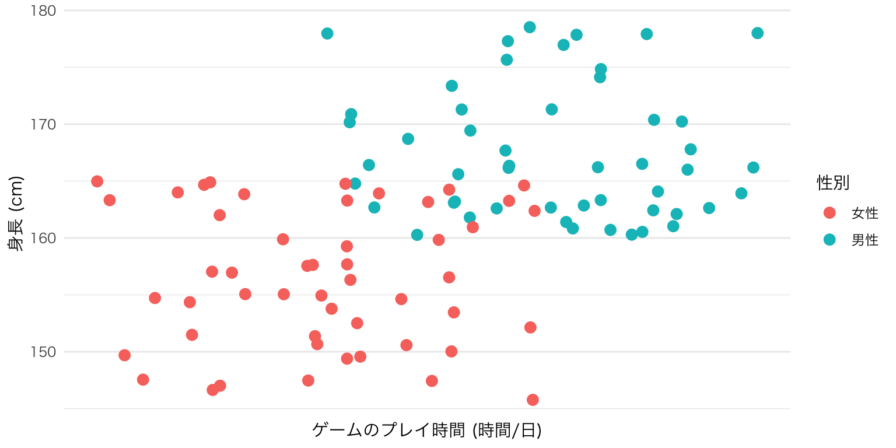
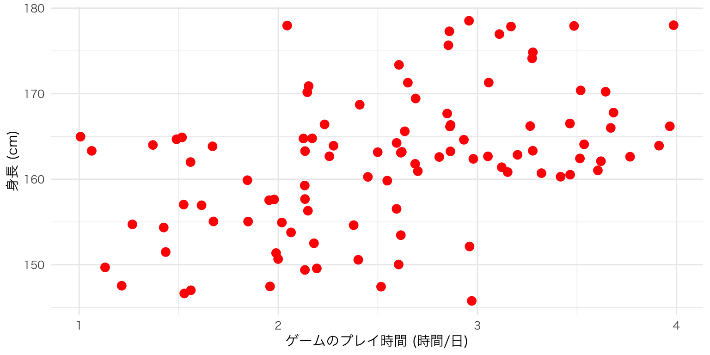
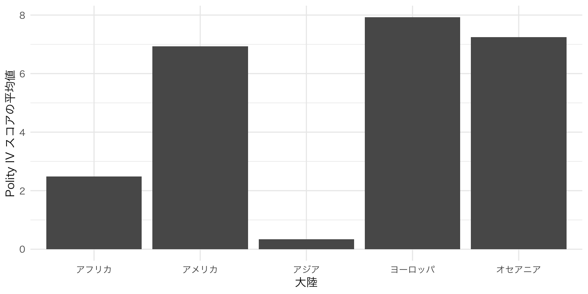
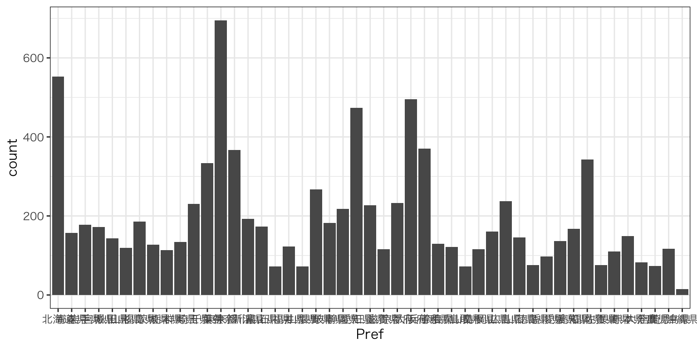
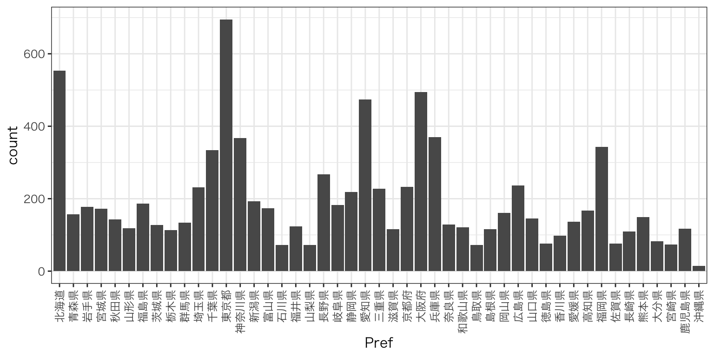
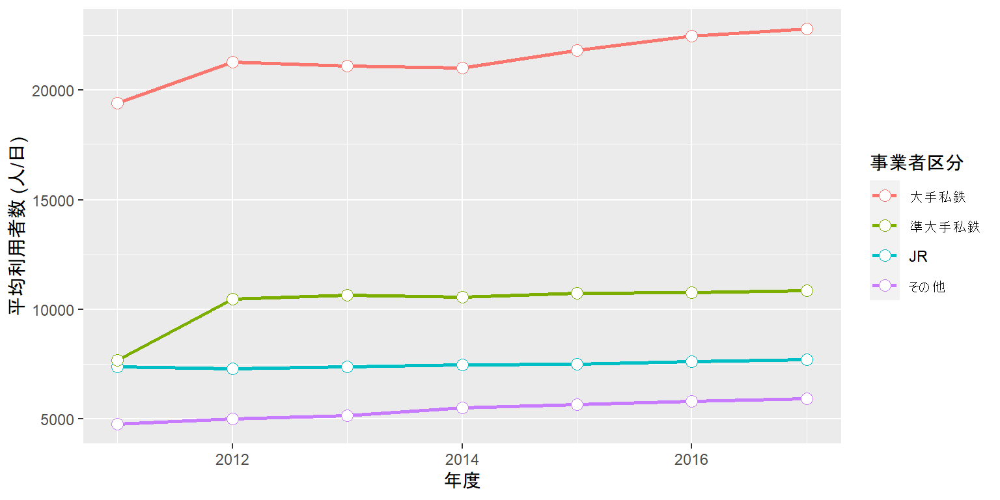

15. 可視化
15.1 可視化のためのパッケージ
- Rのbase graphic
- lattice
- ggplot2
15.3 グラフィックの文法
15.3.1 ggplot2のイメージ
ggplot(data = df) +
geom_line(aes(x = Year, y = P, color = Company_Type1),
size = 1) +
geom_point(aes(x = Year, y = P, color = Company_Type1),
size = 3, pch = 21, fill = "white") +
labs(x = "年度", y = "平均利用者数 (人/日)", color = "事業者区分") +
scale_x_continuous(breaks = 2011:2017, labels = 2011:2017) +
theme_minimal(base_family = "HiraKakuProN-W3")
# 第2層: X軸はYear、Y軸はPにし、Company_type1ごとに色分けした折れ線グラフを作成し、線の太さは1とする。
ggplot(data = df) +
geom_line(aes(x = Year, y = P, color = Company_Type1),
size = 1)
# 第3層: X軸はYear、Y軸はPにし、Company_type1ごとに色分けした散布図を作成する。
# 点の大きさは3、点のタイプは21 (外線付き)、点の中身の色は白よする
ggplot(data = df) +
geom_line(aes(x = Year, y = P, color = Company_Type1),
size = 1) +
geom_point(aes(x = Year, y = P, color = Company_Type1),
size = 3, pch = 21, fill = "white")
# 第4層: X軸、Y軸のラベルをそれぞれ「年度」、「平均利用者数 (人/日)」に
# 凡例のcolorのラベルは「事業者区分」にする
ggplot(data = df) +
geom_line(aes(x = Year, y = P, color = Company_Type1),
size = 1) +
geom_point(aes(x = Year, y = P, color = Company_Type1),
size = 3, pch = 21, fill = "white") +
labs(x = "年度", y = "平均利用者数 (人/日)", color = "事業者区分")
# 第5層: 連続変数で構成されたX軸を調整する
# 目盛りは2011, 2012, ..., 2017とし、ラベルも2011, 2012, ..., 2017に
ggplot(data = df) +
geom_line(aes(x = Year, y = P, color = Company_Type1),
size = 1) +
geom_point(aes(x = Year, y = P, color = Company_Type1),
size = 3, pch = 21, fill = "white") +
labs(x = "年度", y = "平均利用者数 (人/日)", color = "事業者区分") +
scale_x_continuous(breaks = 2011:2017, labels = 2011:2017)
# 第6層: テーマをminimalに指定し、フォント群はHiraKakuProN-W3に
ggplot(data = df) +
geom_line(aes(x = Year, y = P, color = Company_Type1),
size = 1) +
geom_point(aes(x = Year, y = P, color = Company_Type1),
size = 3, pch = 21, fill = "white") +
labs(x = "年度", y = "平均利用者数 (人/日)", color = "事業者区分") +
scale_x_continuous(breaks = 2011:2017, labels = 2011:2017) +
theme_minimal(base_family = "HiraKakuProN-W3")

図 15.1: ggplot2の図が出来上がるまで (全体像)
15.3.2 グラフィックの構成要素
ggplot2におけるプロット (plot)は「データ + 幾何オブジェクト + 座標系」で構成されます。
ここでいうデータは主にデータフレームまたはtibbleです。これは主にggplot()関数の第一引数と指定するか、パイプで渡すのが一般的です。ただし、ggplot2で作図するためには、データを予め整然データに整形する必要があります。
幾何オブジェクト (geometry object)とは簡単に言うと図の種類です。散布図、折れ線グラフ、棒グラフ、ヒストグラムなど、ggplot2は様々なタイプの幾何オブジェクトを提供しており、ユーザー自作の幾何オブジェクトもRパッケージとして多く公開されています。幾何オブジェクトは関数の形で提供されており、geom_で始まるといった共通点があります。散布図はgeom_point()、折れ線グラフはgeom_line()のような関数を使います。
この幾何オブジェクトに線や点、棒などを表示する際には、どの変数が横軸で、どの変数が縦軸かを明記する必要があります。また、変数によって点や線の色が変わったりする場合も、どの変数によって変わるかを明記します。これを マッピング (mapping)と呼びます。また、必要に応じて位置 (position)と統計量 (stat)を明記する必要がありますが、これは指定しなくてもとりあえず何らかの図は出力されます。
最後に座標系 (coordinate system)は幾何オブジェクトが表示される空間の特徴を定義します。最も重要な特徴は横軸と縦軸の下限と上限です。または、空間を回転することなどもできます。
ggplot2の図は以上の3つ要素を重ねることで出来ます。

図 15.2: ggplot2の構造の例
ただし、この中で座標系は適切だと判断される座標系に設定してくれるため、ユーザーが必ず指定すべきものはデータと幾何オブジェクトのみです。また、幾何オブジェクトはマッピングを含んでおり、これも必ず指定する必要があります。したがって、ggplot2で作図するための最小限のコードは以下のようになります。
# ggplot2におけるプロットの基本形
# データはggplotの第一引数と使う場合が多いため、「data =」は省略可能
# マッピングは主に幾何オブジェクトの第一引数として使うため、「mapping =」は省略可能
ggplot(data = データ名) +
幾何オブジェクト関数(mapping = aes(マッピング))
# パイプを使う場合
データ名 %>%
ggplot() +
幾何オブジェクト関数(mapping = aes(マッピング))注意すべき点はggplot2においてレイヤーを重ねる際は%>%でなく、+を使う点です。パイプ演算子は左側の結果を右に渡す意味を持ちますが、ggplot2はデータを渡すよりも、レイヤーを足していくイメージですから、+を使います。
以下はggplot2の必須要素であるデータと幾何オブジェクト、マッピングなどについて解説し、続いて図は見栄を調整するための関数群を紹介します。
15.3.2.1 データ
作図のためにはデータはなくてはなりません。データはdata.frmae型、またはtibble型であり、一般的にはggplot()関数の第一引数として指定します。例えば、ggplot(data = データ名)のように書いてもいいですし、data =は省略して、ggplot(データ名)でも構いません。
データを指定するもう一つの方法はパイプ演算子を使うことです。この場合、データ名 %>% ggplot()のように書きます。書く手間はほぼ同じですが、dplyrやtidyrなどでデータを加工し、それをオブジェクトとして保存せずにすぐ作図に使う場合は便利です。
実際、使う機会は少ないですが、1つのグラフに複数のデータを使う場合もあります。ggplot2は複数のデータにも対応していますが、とりあえずメインとなるデータをggplot()に指定し、追加的に必要なデータは今度説明する幾何オブジェクト関数内で指定します。この方法については適宜必要に応じて説明します。
15.3.2.2 幾何オブジェクト
しかし、データを指定しただけで図が出来上がるわけではありません。指定したデータを使ってどのような図を作るかも指定する必要があります。この図のタイプが幾何オブジェクト (geometry object)であり、geom_*()関数で表記します。たとえば、散布図を作る場合、
のように指定します。以上のコードは「あるデータを使って (データ名 %>%)、キャンバスを用意し (ggplot() +)、散布図を作成する (geom_point())。」と読むことが出来ます。
また、この幾何オブジェクトは重ねることも可能です。よく見る例としては、散布図の上に回帰曲線 (geom_smooth())や折れ線グラフ (geom_line())を重ねたものであり、これらの幾何オブジェクトは+で繋ぐことが可能です。
ggplot2が提供する幾何オブジェクト関数は散布図だけでなく、棒グラフ (geom_bar())、ヒストグラム (geom_histogram())、折れ線グラフ (geom_line())、ヒートマップ (geom_tile())など、データ分析の場面で使われるほとんどの種類が含まれています。他にもユーザーが作成した幾何オブジェクトもパッケージとして多く公開されています（たとえば、非巡回有向グラフ作成のためのggdag、ネットワークの可視化のためのggnetworkなど）。
15.3.2.3 マッピング
どのようなデータを使って、どのような図を作るかを指定した後は、変数を指定します。たとえば、散布図の場合、各点の横軸と縦軸における位置情報が必要です。ヒストグラムならヒストグラムに必要な変数を指定する必要があります。このようにプロット上に出力されるデータの具体的な在り方を指定するのをマッピング (mapping)と呼びます。
マッピングは幾何オブジェクト関数内で行います。具体的にはgeom_*()内にmapping = aes(マッピング)で指定します。aes()も関数の一種です。散布図ならgeom_point(mapping = aes(x = X軸の変数, y = Y軸の変数))です。ヒストグラムなら横軸のみを指定すればいいのでgeom_histogram(mapping = aes(x = 変数名))で十分です。マッピングは一般的にはgeom_*()の第一引数として渡しますが、この場合、mapping =は省略可能です。
マッピングに必要な変数、つまりaes()に必要な引数は幾何オブジェクトによって異なります。散布図や折れ線グラフならX軸とY軸の情報が必須であるため、2つ必要です (xとy)。ヒストグラムは連続変数の度数分布表を自動的に作成してからグラフが作られるから1つが必要です (x)。また、等高線図の場合、高さの情報も必要なので3つの変数が必要です (xとy、z)。これらの引数は必ず指定する必要があります。
以上の引数に加え、追加のマッピング情報を入れることも可能です。たとえば、鉄道事業者ごとの平均利用者数を時系列で示した最初の例を考えてみましょう。これは折れ線グラフですので、mapping = aes(x = 年度, y = 利用者数)までは必須です。しかし、この図にはもう一つの情報がありますね。それは事業者のタイプです。事業者のタイプごとに線の色を変えたい場合は、aes()内にcolor = 事業者のタイプを、線の種類を変えたい場合は、linetype = 事業者のタイプのように引数を追加します。こうすると2次元のプロットに3次元の情報 (年度、利用者数、事業者タイプ)を乗せることが可能です。むろん、4次元以上にすることも可能です。たとえば、地域ごとに異なる色を、事業者タイプごとに異なる線のタイプを指定する場合は、mapping = aes(x = 年度, y = 利用者数, color = 地域, linetype = 事業者のタイプ)のように指定します。colorやlinetype以外にも大きさ (size)、透明度 (alpha)、点のタイプ (shape)、面の色 (fill)などを指定することができます。
先ほどマッピング引数は幾何オブジェクト関数内で指定すると言いましたが、実はggplot()内に入れ、geom_*()内では省略することも可能です。幾何オブジェクトが1つのみならどっちでも問題ありません。しかし、幾何オブジェクトが2つ以上の場合は注意が必要です。全ての幾何オブジェクトがマッピングを共有する場合はggplot()の方が書く手間が省きます。しかし、幾何オブジェクトがマッピングを共有しない場合は幾何オブジェクト関数内に別途指定する必要があります。あるいは、共有するところだけ、ggplot()に書いて、共有しない部分だけ幾何オブジェクトで指定することも可能です。
15.3.2.4 その他
以上のことさえ覚えれば、とりあえず図は作れます。最後に、必須要素ではありませんが、幾何オブジェクトに使う引数について説明します。先ほど説明しましたcolorやlinetype、sizeなどはマッピングの情報として使うことも可能ですが、aes()の外側に置くことも可能です。しかし、その挙動はかなり異なります。colorがaes()の外側にある場合は、幾何オブジェクトの全要素に対して反映される。
たとえば、横軸が「ゲームのプレイ時間」、縦軸が「身長」の散布図を作成しるとします。ここでcolor引数を追加しますが、まずはaes()の外側に入れます。
ここで注目する点は
- 散布図におけるすべての点の色が
colorで指定した色 ("red"= 赤)に変更された点 colorの引数は変数名でなく、具体的な色を指定する点
以上の2点です。aes()の内側にcolorを指定する場合は、以下のように変数名を指定します。たとえば、性別ごとに異なる色を付けるとしたら、

以上のように書きます。aes()の内部はマッピングの情報が含まれています。言い換えると、aes()の中はある変数がグラフ上においてどのような役割を果たしているかを明記するところです。2つ目の例では性別という変数が色分けをする役割を果たすため、aes()の内側に入ります。一方、1つ目の例では色分けが行われておりません。
ここまでがggplot2の入門の入門の入門です。韓国旅行に例えると、やっと仁川国際空港の入国審査を通ったところです。The R Graph Galleryを見ると、主にggplot2で作成知れた綺麗な図がいっぱいあります。しかし、ここまで勉強してきたものだけでは、このような図を作るのは難しいです。そもそもサンプルコードを見ても理解するのが難しいかも知れません。以下では本格的なggplot2の使い方を解説します。到達目標は(1)「よく使う」グラフが作成できること、そして(2)The R Graph Galleryのサンプルコードを見て自分で真似できるようになることです。
15.4 実習用データ
実習の前に本章で使用するデータとggplot2パッケージが含まれているtidyverseを読み込みます。
## # A tibble: 9,150 x 23
## ID Station_Name Pref Zipcode Address Longitude Latitude Station_Status Line_ID
## <dbl> <chr> <dbl> <chr> <chr> <dbl> <dbl> <dbl> <dbl>
## 1 1.11e6 函館 1 040-00… 北海道函館市… 141. 41.8 0 11101
## 2 1.11e6 五稜郭 1 041-08… 函館市亀田本… 141. 41.8 0 11101
## 3 1.11e6 桔梗 1 041-08… 北海道函館市… 141. 41.8 0 11101
## 4 1.11e6 大中山 1 041-11… 亀田郡七飯町… 141. 41.9 0 11101
## 5 1.11e6 七飯 1 041-11… 亀田郡七飯町… 141. 41.9 0 11101
## 6 1.11e6 新函館北斗 1 041-12… 北海道北斗市… 141. 41.9 0 11101
## 7 1.11e6 仁山 1 041-11… 亀田郡七飯町… 141. 41.9 0 11101
## 8 1.11e6 大沼 1 041-13… 北海道亀田郡… 141. 42.0 0 11101
## 9 1.11e6 大沼公園 1 041-13… 北海道亀田郡… 141. 42.0 0 11101
## 10 1.11e6 赤井川 1 049-21… 茅部郡森町字… 141. 42.0 0 11101
## # … with 9,140 more rows, and 14 more variables: Line_Name <chr>, Line_Status <dbl>,
## # Company_ID <dbl>, Company_Name <chr>, Company_Type1 <dbl>, Company_Type2 <dbl>,
## # Company_Status <dbl>, P2011 <dbl>, P2012 <dbl>, P2013 <dbl>, P2014 <dbl>,
## # P2015 <dbl>, P2016 <dbl>, P2017 <dbl>全国の9150鉄道駅のデータを収集したものです。データには駅の地理的情報や、路線、事業者の情報と平均利用者数 (人/日)が含まれています。利用者数の情報は国土交通省の国土数値情報「駅別乗降客数データ」から、その他の情報は「駅データ.jp」から入手したものです。両データの結合は緯度と経度を基準にマッチングし、駅名が一致するケースのみ残したものです。したがって、不正確にマッチングされたケースが存在する可能性があります（とりわけ乗換駅など）。この実習用データを使って、何らかの意味のある分析はできません。あくまでも実習用データとしてお使いください。
各変数の詳細は以下の通りです。
| 変数名 | 説明 | 詳細 |
|---|---|---|
ID
|
駅ID | |
Station_Name
|
駅名 | |
Pref
|
所在地 | 都道府県 (ID) |
Zipcode
|
所在地 | 郵便番号 |
Address
|
所在地 | 住所 |
Longitude
|
経度 | |
Latitude
|
緯度 | |
Station_Status
|
駅の状態 | 0:運用中 / 1:運用前 / 2:廃止 |
Line_ID
|
路線ID | |
Line_Name
|
路線名 | |
Line_Status
|
路線の状態 | 0:運用中 / 1:運用前 / 2:廃止 |
Company_ID
|
事業者ID | |
Company_Name
|
事業者名 | |
Company_Type1
|
事業者タイプ1 | 0:その他 / 1:JR / 2:大手私鉄 / 3:準大手私鉄 |
Company_Type2
|
事業者タイプ2 | 1:JR / 2:公営 / 3:民営 / 4:第三セクター |
Company_Status
|
事業者の状態 | 0:運用中 / 1:運用前 / 2:廃止 |
P2011
|
2011年度利用者数 | 単位は(人/日) |
P2012
|
2012年度利用者数 | 単位は(人/日) |
P2013
|
2013年度利用者数 | 単位は(人/日) |
P2014
|
2014年度利用者数 | 単位は(人/日) |
P2015
|
2015年度利用者数 | 単位は(人/日) |
P2016
|
2016年度利用者数 | 単位は(人/日) |
P2017
|
2017年度利用者数 | 単位は(人/日) |
15.5 棒グラフ
棒グラフについては以下の2つのタイプについて説明します。
- ある変数の数の表す棒グラフ
- 各グループの統計量を表す棒グラフ
前者は「データ内に北海道のケースはいくつあるか、東京の行はいくつあるか」のようなものであり、後者は「都道府県ごとの利用者数の平均値はいくつか」を出力するグラフです。
15.5.1 ケース数のグラフ
まず、dfのPref変数における各値の頻度数を棒グラフとして出してみましょう。表としてまとめる簡単な方法はtable()関数があります。
##
## 1 2 3 4 5 6 7 8 9 10 11 12 13 14 15 16 17 18 19 20 21 22
## 553 157 178 172 143 119 186 127 113 134 231 334 695 367 193 173 72 123 72 267 182 218
## 23 24 25 26 27 28 29 30 31 32 33 34 35 36 37 38 39 40 41 42 43 44
## 474 227 116 233 495 370 129 121 72 116 161 237 146 76 98 137 167 343 76 110 149 83
## 45 46 47
## 73 117 15ケース数の棒グラフは、都道府県名を横軸に、ケース数を縦軸にしたグラフですが、都道府県変数がcharacter型でなく、numeric型になっています。社会調査に慣れている読者なら数字を見るだけでどの都道府県かが分かるでしょうが、図表にする時には、ちゃんと「1は北海道」、「2は青森県」、…のようにラベルを付ける必要があります。図は左側が北海道、右側が沖縄県にしたいので、順番が必要であり、factor型に変換した方がいいでしょう。ただし、1から47までの全ての値にラベルを付けるのは以下のようにかなり手間のかかる作業です。
df <- df %>%
mutate(Pref = factor(Pref, levels = 1:47,
labels = c("北海道", "青森県", "宮城県",
...,
"鹿児島県", "沖縄県")))したがって、今回は第9章で使いました、Vote.csvを使います。このデータには47都道府県の選挙結果が含まれており、都道府県名 (Pref変数)も地方公共団体コード順になっています。このデータを読み込み、Pref_dfという名で保存します。
## Parsed with column specification:
## cols(
## ID = col_double(),
## Pref = col_character(),
## Zaisei = col_double(),
## Over65 = col_double(),
## Under30 = col_double(),
## LDP = col_double(),
## DPJ = col_double(),
## Komei = col_double(),
## Ishin = col_double(),
## JCP = col_double(),
## SDP = col_double()
## )## [1] "北海道" "青森県" "岩手県" "宮城県" "秋田県" "山形県" "福島県"
## [8] "茨城県" "栃木県" "群馬県" "埼玉県" "千葉県" "東京都" "神奈川県"
## [15] "新潟県" "富山県" "石川県" "福井県" "山梨県" "長野県" "岐阜県"
## [22] "静岡県" "愛知県" "三重県" "滋賀県" "京都府" "大阪府" "兵庫県"
## [29] "奈良県" "和歌山県" "鳥取県" "島根県" "岡山県" "広島県" "山口県"
## [36] "徳島県" "香川県" "愛媛県" "高知県" "福岡県" "佐賀県" "長崎県"
## [43] "熊本県" "大分県" "宮崎県" "鹿児島県" "沖縄県"これを使わない理由はないでしょう。factor()内のlabels引数の値としてPref_dfのPref列を使います。
## # A tibble: 9,150 x 23
## ID Station_Name Pref Zipcode Address Longitude Latitude Station_Status Line_ID
## <dbl> <chr> <fct> <chr> <chr> <dbl> <dbl> <dbl> <dbl>
## 1 1.11e6 函館 北海道… 040-00… 北海道函館市… 141. 41.8 0 11101
## 2 1.11e6 五稜郭 北海道… 041-08… 函館市亀田本… 141. 41.8 0 11101
## 3 1.11e6 桔梗 北海道… 041-08… 北海道函館市… 141. 41.8 0 11101
## 4 1.11e6 大中山 北海道… 041-11… 亀田郡七飯町… 141. 41.9 0 11101
## 5 1.11e6 七飯 北海道… 041-11… 亀田郡七飯町… 141. 41.9 0 11101
## 6 1.11e6 新函館北斗 北海道… 041-12… 北海道北斗市… 141. 41.9 0 11101
## 7 1.11e6 仁山 北海道… 041-11… 亀田郡七飯町… 141. 41.9 0 11101
## 8 1.11e6 大沼 北海道… 041-13… 北海道亀田郡… 141. 42.0 0 11101
## 9 1.11e6 大沼公園 北海道… 041-13… 北海道亀田郡… 141. 42.0 0 11101
## 10 1.11e6 赤井川 北海道… 049-21… 茅部郡森町字… 141. 42.0 0 11101
## # … with 9,140 more rows, and 14 more variables: Line_Name <chr>, Line_Status <dbl>,
## # Company_ID <dbl>, Company_Name <chr>, Company_Type1 <dbl>, Company_Type2 <dbl>,
## # Company_Status <dbl>, P2011 <dbl>, P2012 <dbl>, P2013 <dbl>, P2014 <dbl>,
## # P2015 <dbl>, P2016 <dbl>, P2017 <dbl>Pref変数がfactor型となり、ラベルも付きました。それではグラフを作ってみます。データはdfであり、使う幾何オブジェクトはgeom_bar()です。ここで必要な情報は横軸、つまり都道府県のみです。縦軸も「ケース数」という情報も必要ですが、ggplot2が勝手に計算してくれるので、指定しません。

使用しているPCのOSによっては、このように文字化けすることもあります。この場合は、プロットで使用するフォント群 (font family)を指定する必要があります。たとえば、macOSの場合、ヒラギノ角コジックW3がよく使われます (W0からW9まであり、数字が大きくなると太字になります)。フォント群の指定はtheme_*()関数のbase_family引数で行います。ここのtheme_*()ですが、*の箇所にはgrayやbw、minimalなどが入ります。ggplot2が提供しているテーマについてはここを参照してください。また、ggthemesやegg、hrbrthemesなどのパッケージを導入すると様々なテーマが利用可能になります。デフォルトのテーマはgrayですが、今回はbwにし、ヒラギノ角コジックW3 ("HiraKakuProN-W3")をフォント群として指定します。

問題は、都道府県名が重なってしまったところです。これを解決するためには都道府県名を90度回転すればいいでしょう。X軸のテキストはtheme()関数内のaxis.text.x引数で調整します。これらの機能については後に説明しますので、ここではとりあえず入力してみます。
df %>%
ggplot() +
geom_bar(aes(x = Pref)) +
theme_bw(base_family = "HiraKakuProN-W3") +
theme(axis.text.x = element_text(angle = 90, vjust = 0.5, hjust = 1))
これでグラフが完成しました。ただ、グラフ内の言語は統一する必要があるので、横軸と縦軸のラベルを"Pref"から"都道府県"へ、"count"から"ケース数"へ変更します。ラベルはlabs()関数のxとy引数で修正可能です。
df %>%
ggplot() +
geom_bar(aes(x = Pref)) +
labs(x = "都道府県", y = "ケース数") +
theme_minimal(base_family = "HiraKakuProN-W3") +
theme(axis.text.x = element_text(angle = 90, vjust = 0.5, hjust = 1))
これで初めてのggplotを用いたグラフが完成しました。
15.5.2 記述統計量のグラフ
次は記述統計量のグラフを出してみます。たとえば、都道府県ごとに2017年度平均利用者数の平均値を図示するとします。まずは、dplyrを使って、都道府県ごとに2017年度平均利用者数の平均値を計算し、Bar_df1という名で保存します。
Bar_df1 <- df %>%
group_by(Pref) %>%
summarise(Passenger = mean(P2017, na.rm = TRUE),
.groups = "drop")
Bar_df1## # A tibble: 47 x 2
## Pref Passenger
## <fct> <dbl>
## 1 北海道 2837.
## 2 青森県 440.
## 3 岩手県 454.
## 4 宮城県 5288.
## 5 秋田県 219.
## 6 山形県 483.
## 7 福島県 572.
## 8 茨城県 4100.
## 9 栃木県 1894.
## 10 群馬県 1509.
## # … with 37 more rowsそれでは、このBar_df1を基にグラフを作りますが、今回は縦軸の情報も必要です。横軸はPref、縦軸はPassenger変数に指定します。そして、重要なものとしてstat引数を指定します。これはマッピングと関係なく、棒グラフの性質に関係するものなので、aes()の外側に位置します。これを指定しない場合、geom_bar()は基本的にはケース数を計算し、図示します。Passengerの値そのものを縦軸にしたい場合はstat = "identity"を指定します。後は、先ほどの棒グラフと同じです。
Bar_df1 %>%
ggplot() +
geom_bar(aes(x = Pref, y = Passenger), stat = "identity") +
labs(x = "都道府県", y = "平均利用者数 (人/日)") +
theme_minimal(base_family = "HiraKakuProN-W3") +
theme(axis.text.x = element_text(angle = 90, vjust = 0.5, hjust = 1))
15.6 ヒストグラム
ヒストグラムは棒グラフと非常に形が似ていますが、横軸が都道府県のような離散変数でなく、連続変数であるのが特徴です。連続変数をいくつの区間に分け、その区間内に属するケース数 (度数)を示したのがヒストグラムです。連続変数を扱っているため、棒間に空間がありません。それでもケース数の棒グラフと非常に似通っているため、マッピングの仕方も同じです。異なるのは幾何オブジェクトがgeom_bar()でなく、geom_histogram()に変わるくらいです。ここでは2017年度平均利用者数 (P2017)変数のヒストグラムを作ってみます。
df %>%
ggplot() +
geom_histogram(aes(x = P2017)) +
labs(x = "2017年度平均利用者数 (人/日)", y = "度数") +
theme_bw(base_family = "HiraKakuProN-W3")## `stat_bin()` using `bins = 30`. Pick better value with `binwidth`.ケース数の棒グラフのコードとほぼ同じです。今回は横軸のテキストを回転する必要がないため、theme()は省略しました。ヒストグラムを見ると平均利用者数が非常に少ない駅が多い一方、一日利用者数が約150万人のケースもあることが分かります。グラフは全データを使うため、このような結果になります。しかし、約95%の駅が一日利用者5万人未満であり、約80%が1万人未満です。上の図を見ても8000以上のケースが1つの棒としてまとめられており、分布を見るにはあまり適切ではないかも知れません。
この場合、変数を対数化することも有効です。利用者数を底10の対数化 (常用対数)をすると、150万のような非常に大きい値があっても比較的に狭い範囲内にデータを収めることが出来ます。自然対数 (底が\(e\))も可能ですが、「読む」ためのグラフとしては底が10の方が読みやすいでしょう。横軸の変数が対数化されるということは、横軸のスケールを対数化することと同じです。そのための関数としてscale_x_log10()があります。これは横軸、つまりX軸を底10の対数に変換する関数です。
df %>%
mutate(P2017 = P2017 + 1) %>%
ggplot() +
geom_histogram(aes(x = P2017)) +
scale_x_log10() +
labs(x = "2017年度平均利用者数 (人/日) (対数)", y = "度数") +
theme_bw(base_family = "HiraKakuProN-W3")## `stat_bin()` using `bins = 30`. Pick better value with `binwidth`.
横軸の「1e+01」や「1e+03」で登場する「e+x」は「10のx乗」を意味します。1e+01は\(1 \cdot 10^1 = 10\)であり、1e+05は\(1 \cdot 10^5 = 100000\)です。
対数化は広い範囲のデータを縮小する時に便利ですが、それでも解釈が直感的でないと考える方もいるでしょう。それなら、データを多少犠牲し、データが多く集まっている範囲内でヒストグラムを示すことも可能です。たとえば、1日利用者数の平均が1万人未満の駅は80%であり、これらに限定したヒストグラムを作ってみましょう。そのためにはdfのP2017が10000人以下の駅に絞る必要がありますが、filter()関数を使えば簡単です。
df %>%
filter(P2017 <= 10000) %>%
ggplot() +
geom_histogram(aes(x = P2017)) +
labs(x = "2017年度平均利用者数 (人/日)", y = "度数") +
theme_bw(base_family = "HiraKakuProN-W3")## `stat_bin()` using `bins = 30`. Pick better value with `binwidth`.
このヒストグラムをみると、それでも利用者が非常に少ない駅が多いことが分かります。また、ヒストグラムを作成する際に以下のようなメッセージが出力されます。
## `stat_bin()` using `bins = 30`. Pick better value with `binwidth`.これは「連続変数P2017を30区間に分けました」という意味です。この区間数を調整する方法は2つあり、(1) 区間数を指定する、(2) 区間の幅を指定する方法があります。
区間数を指定することはすなわちヒストグラムの棒の数を指定することであり、bins引数で調整可能です。たとえば、棒の数を10個にするためにはgeom_histogram()内にbins = 10を指定します。棒を数えやすくするために、棒を枠線の色を白 ("white")に設定します。
df %>%
filter(P2017 <= 10000) %>%
ggplot() +
geom_histogram(aes(x = P2017), bins = 10, color = "white") +
labs(x = "2017年度平均利用者数 (人/日)", y = "度数") +
theme_bw(base_family = "HiraKakuProN-W3")数えてみると棒が10個だということが分かります。
他にも区間の幅を指定することも可能です。区間の幅は棒の幅と一致します。たとえば、棒の幅を2000にしてみましょう。あまり意味はありませんが、棒の色は白、枠線の色は黒とします。また、X軸のテキストも修正してみましょう。上の図だと「0, 2500, 5000, 7500, 10000」になっていますが、これを0から10000まで1000刻み (=seq(0, 10000, by = 1000))にします。これはscale_x_continuous()関数で調整しますが、詳しい解説は後にします。
df %>%
filter(P2017 <= 10000) %>%
ggplot() +
geom_histogram(aes(x = P2017),
binwidth = 2000, fill = "white", color = "black") +
scale_x_continuous(breaks = seq(0, 10000, 1000),
labels = seq(0, 10000, 1000)) +
labs(x = "2017年度平均利用者数 (人/日)", y = "度数") +
theme_bw(base_family = "HiraKakuProN-W3")
ヒストグラムが出力されましたが、棒の幅がbinwidthで指定した2000と一致することが分かります。
ただし、ここで棒の数が6つであることに疑問を持つ読者もいるでしょう。データの範囲は0から10000で、2000刻みの棒を書いているから棒は5つのはずです。これはggplot2の基本仕様です。ヒストグラムは度数分布表を基に作成されますが、本グラフの度数分布表は以下のようになります。
| 階級 | 度数 |
|---|---|
| -1000~1000 | 5355 |
| 1000~3000 | 1009 |
| 3000~5000 | 472 |
| 5000~7000 | 267 |
| 7000~8000 | 224 |
| 8000~11000 | 89 |
簡単に言うと、ヒストグラムの最初の棒は0を中央にします。これによってヒストグラムの境界線 (boundary)が、データより左右に1000広くなります。もし、これを調整したい場合は、boundary引数を指定します。指定しない場合、boundaryは「棒の広さ / 2」となります。棒がデータの範囲を超えないようにするためには、geom_histogram()内にboundary = 0を指定します。
df %>%
filter(P2017 <= 10000) %>%
ggplot() +
geom_histogram(aes(x = P2017), boundary = 0,
binwidth = 2000, fill = "white", color = "black") +
scale_x_continuous(breaks = seq(0, 10000, 1000),
labels = seq(0, 10000, 1000)) +
labs(x = "2017年度平均利用者数 (人/日)", y = "度数") +
theme_bw(base_family = "HiraKakuProN-W3")
15.7 散布図
15.8 図のカスタマイズ
15.8.1 coord_*(): 座標系の調整
15.8.2 scale_*_*(): スケールの調整
15.8.3 theme_*(): テーマの指定
15.8.4 theme(): テーマの調整
15.9 図の保存
15.10 練習問題
dfを用い、以下のような図を作成せよ。